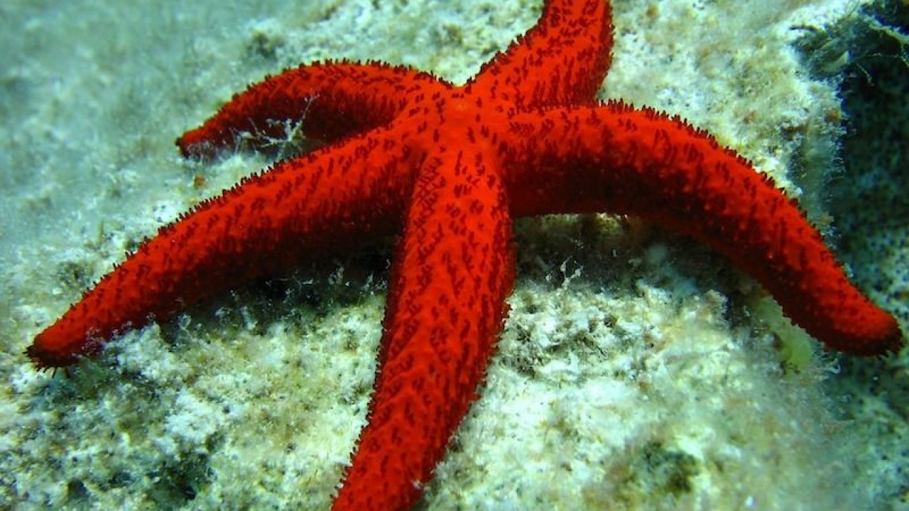
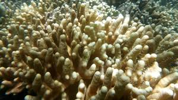
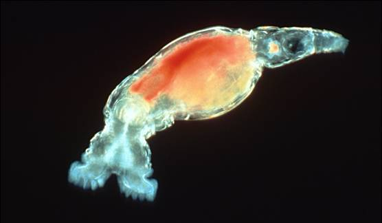
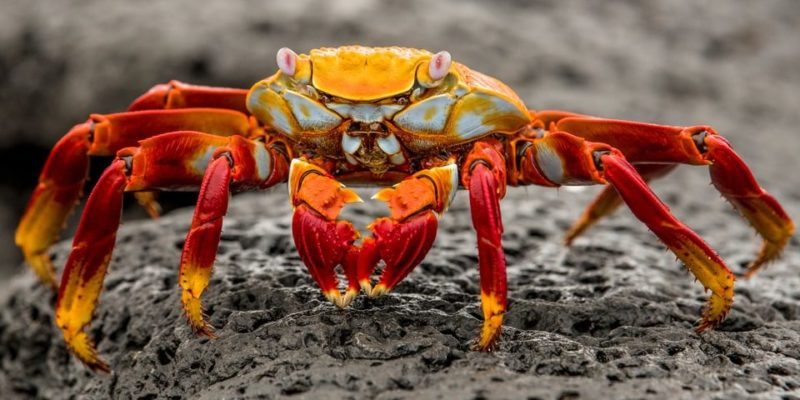
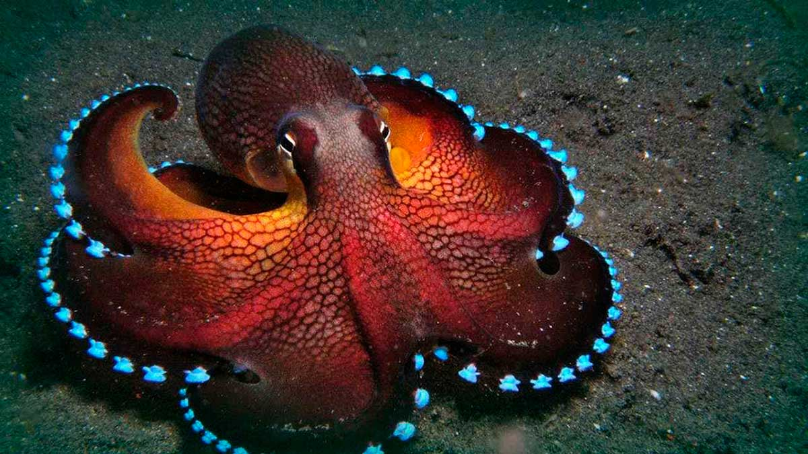

Invertebrados
Son aquellos tipos de animales marinos entre los que se encuentran los erizos de mar o las estrellas. Son un grupo que suelen tener una parte muy espinosa en su interior, de ahí que su nombre en griego signifique “piel espinosa”. Hay cerca de 7 mil de estas especies en el mar.
Las esponjas son animales muy primitivos. Tiene una recubierta de pequeños agüeros y poros inhalantes a través los cuales les ingresa el agua y esta sale por un agüero grande que se llama ósculo. Las esponjas no tienen tejidos ni simetría corporal. Puedes encontrar cerca de 9 mil en el agua.
Los rotíferos son unos animales que se encuentran principalmente en agua salada. La mayoría tiene una zona ventral que está rodeada de bandas ciliadas y que crean una corriente para poder atrapar el alimento que haya a su alrededor. A veces, algunos rotíferos viven en el interior de tubos o cápsulas, con lo que son sésiles.
Los crustáceos son de la familia de los artrópodos y tienen una caparazón quitinosa y calcáreo. Se les conoce por formar parte de la familia de los invertebrados.
Con cuerpo blando, están protegidos generalmente con una caparazón. Dentro de los más conocidos se encuentran los bivalvos como las almejas o las ostras, los gasterópodos como los caracoles y las babosas o los cefalópodos como los pulpos, las sepias o los calamares.
